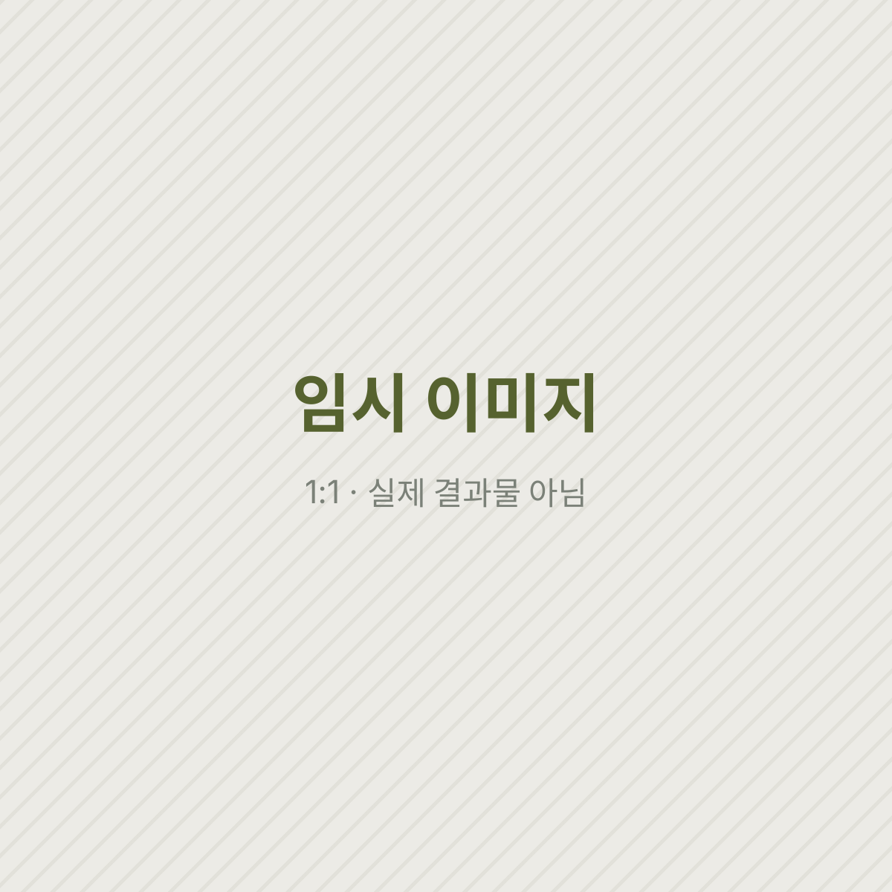
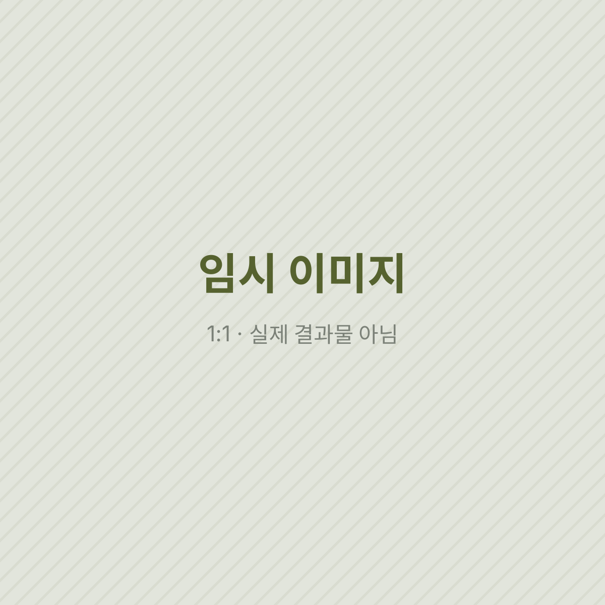
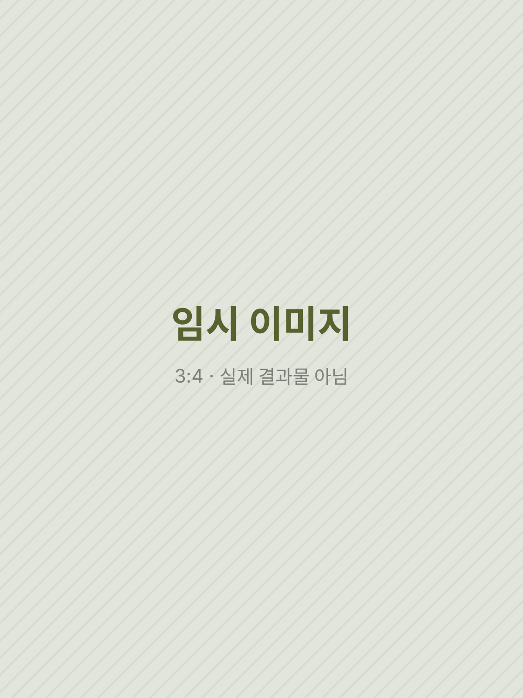
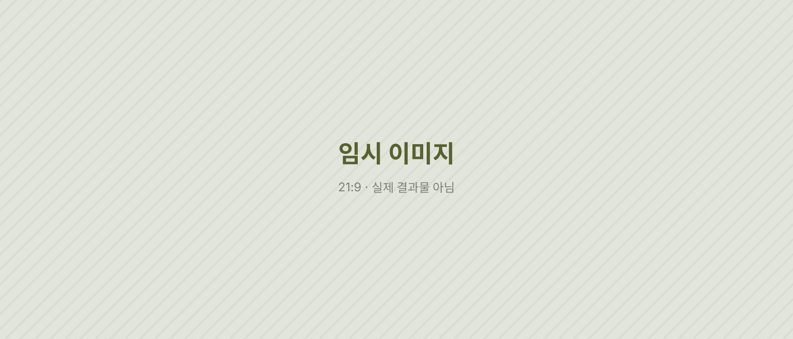

임시 시안 · 이 페이지의 글·이미지·영상은 레이아웃 확인용 더미입니다. 실제 원고와 결과물로 바뀔 예정입니다.
(6) · Fujifilm × MUJI · Exhibition / Workshop
브랜드 협업 전시·워크숍
왜 카메라 브랜드가 텍스트를 필요로 할까?
후지필름 일주일기와 무인양품이 함께한 전시에 생맥이 참여 작가로 함께하고, 사진에 글을 더하는 워크숍을 열었다. (임시 도입문)
Situation사진 옆의 빈자리
후지필름 일주일기 × 무인양품 콜라보 전시(2025.10)에 생맥으로 참여했다.
사진은 순간을 붙잡지만, 그 순간이 왜 남았는지는 말하지 않는다. 이 문단에는 카메라 브랜드의 전시에서 글이 어떤 역할을 할 수 있다고 보았는지가 들어간다. (임시 원고)

Solution사진편지 쓰는 법
워크숍 〈생맥이 알려주는 사진편지 쓰는 법〉을 기획하고 진행했다.


이 문단에는 워크숍의 순서, 참가자가 사진편지를 끝까지 쓰게 만든 장치, 그리고 전시 기획과 나의 역할이 어떻게 나뉘었는지가 들어간다. (임시 원고)

생맥이 전시에 낸 작업이 무엇이었는지를 한두 문장으로 적는 문단이다. (임시 원고)
Result같은 말을 하는 브랜드
결과 단락에는 참가자 수와 후기처럼 확인할 수 있는 결과가 들어간다. (임시 원고)

언어가 달라도 같은 말을 하는 브랜드를 알아보는 법을 배웠다.